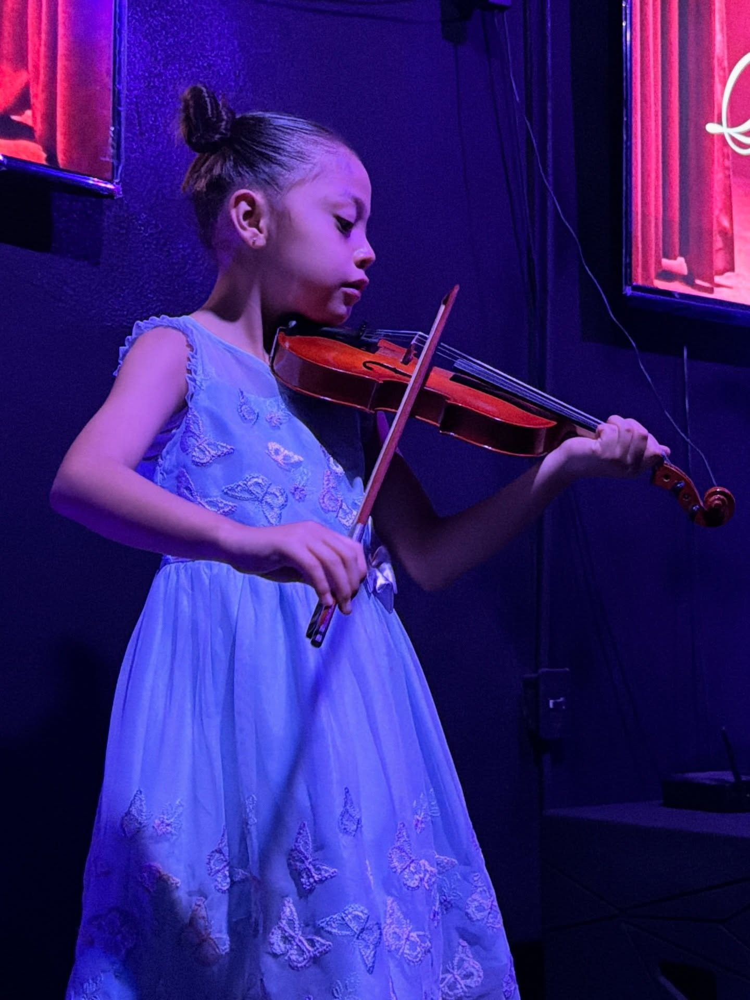
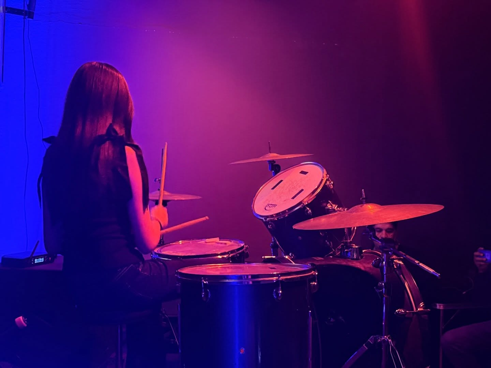
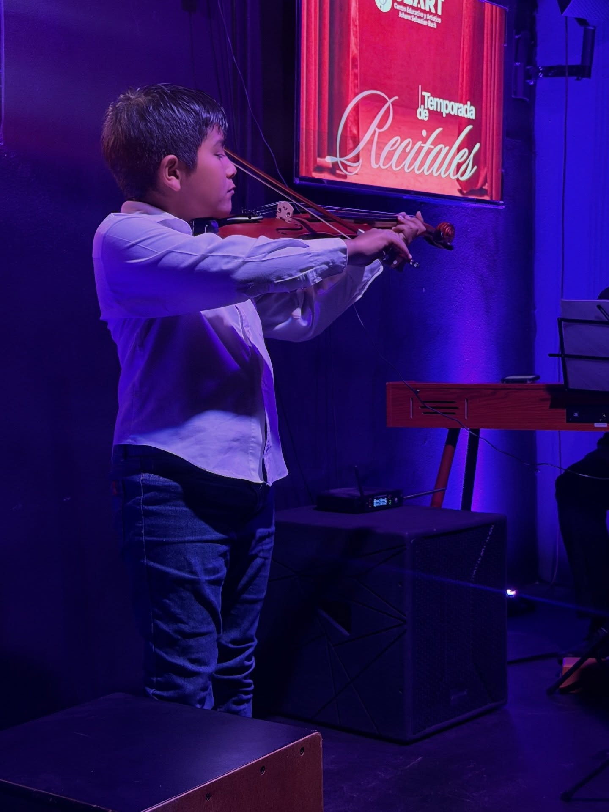
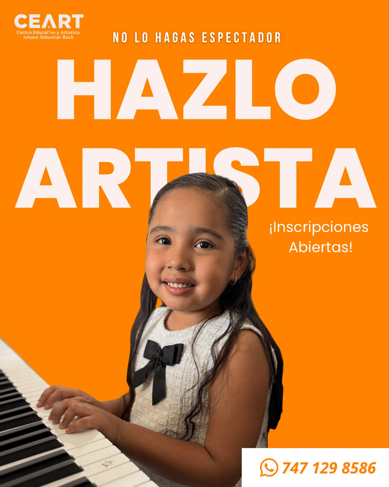

01
Piano
El instrumento rey de la música clásica. Desarrolla lectura musical, coordinación y sensibilidad artística. Salón dedicado con pianos acústicos y digitales.
Salón de PianoCentro Educativo y Artístico Johann Sebastian Bach. Formamos músicos con técnica, pasión y presencia escénica. Inscripciones abiertas para todas las edades.

Clases individuales y grupales para todas las edades. De principiante a avanzado, con maestros dedicados.
El instrumento rey de la música clásica. Desarrolla lectura musical, coordinación y sensibilidad artística. Salón dedicado con pianos acústicos y digitales.
Salón de PianoTécnica clásica con presencia escénica real. Nuestros alumnos se presentan en recitales desde los primeros semestres.
Salón de ViolínClásica, acústica o eléctrica. Aprende a tu ritmo.
Inscripciones abiertasTécnica vocal, afinación y confianza escénica. Curso intensivo disponible.
Intensivo · $500Ritmo, coordinación y potencia. El instrumento que mueve a toda la banda.
Inscripciones abiertasCada alumno de CEART se presenta ante el público. El escenario es parte del aprendizaje.




Accede a tus clases, credencial digital y material didáctico desde cualquier dispositivo. Siempre disponible.
Consulta tu horario, el progreso por materia y los comentarios de tu maestro en tiempo real. Todo tu avance musical en un solo lugar.
Tu credencial oficial con código QR verificable. Muestra que eres alumno activo de CEART en cualquier momento, directo desde tu celular.
Partituras, guías de práctica y recursos compartidos directamente por tu maestro. Accede desde casa y practica cuando quieras.
Consulta el estado de tu mensualidad y el historial de pagos de forma rápida y transparente.
La música no es un talento
que se nace teniendo.
Es un oficio que se forja,
un arte que se vive.

Inscripciones abiertas para niños, jóvenes y adultos. Un lugar donde la técnica se une a la pasión y los sueños suben al escenario.